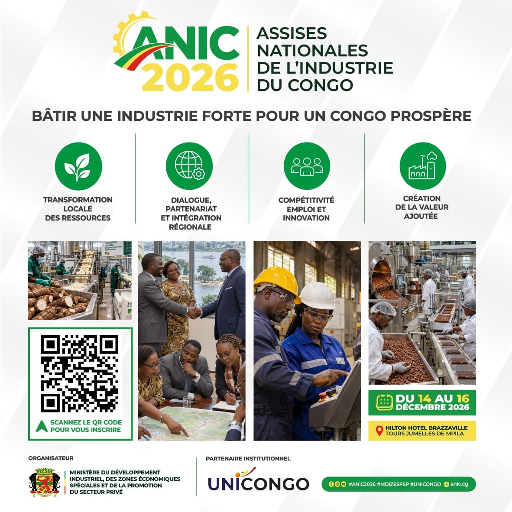
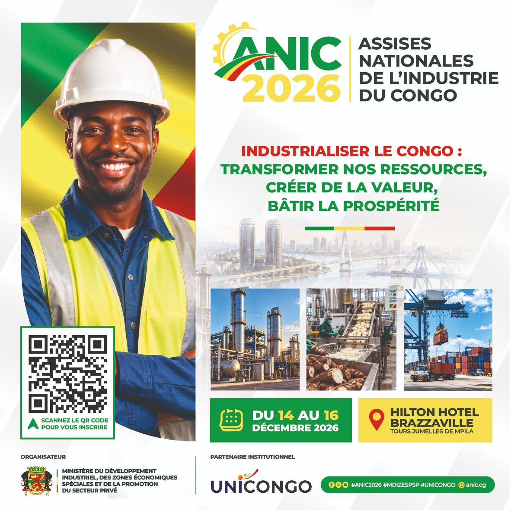

Du 14 au 16 décembre 2026, Brazzaville accueillera les Assises Nationales de l’Industrie du Congo (ANIC 2026), un rendez-vous majeur consacré à l’avenir du secteur industriel national. Placées sous le thème « Industrialiser le Congo : transformer nos ressources, créer de la valeur, bâtir la prospérité », ces Assises ambitionnent de réunir les pouvoirs publics, les industriels, le patronat, les institutions financières et les partenaires techniques et financiers autour d’une ambition commune : faire de l’industrialisation un moteur durable de diversification économique et de création de richesses.
Un rendez-vous stratégique pour l’avenir économique du Congo
L’économie congolaise demeure fortement dépendante de l’exportation des matières premières brutes et des fluctuations des cours des hydrocarbures. Cette configuration expose le pays aux variations des marchés internationaux et souligne la nécessité de développer de nouveaux moteurs de croissance.
Face à cet enjeu, le Gouvernement a fait le choix stratégique de placer l’industrie manufacturière au cœur de la diversification économique, de la souveraineté nationale et de la création d’emplois durables.
Le Congo dispose, à cet égard, d’atouts importants : le Port autonome de Pointe-Noire, des ressources énergétiques et minières, ainsi qu’un patrimoine forestier estimé à 22 millions d’hectares. Ces ressources constituent un potentiel considérable pour développer des activités de transformation locale, renforcer les chaînes de valeur nationales et accroître la valeur ajoutée produite sur le territoire.
Dans un contexte marqué par la recomposition des chaînes d’approvisionnement mondiales et par les perspectives offertes par la Zone de libre-échange continentale africaine (ZLECAf), le développement d’un tissu industriel compétitif représente une opportunité stratégique pour le pays.
C’est dans cette perspective que s’inscrivent les Assises Nationales de l’Industrie du Congo. Elles constituent un cadre national de concertation, de réflexion et de co-décision destiné à mobiliser les acteurs publics et privés autour des orientations de la future Politique nationale d’industrialisation 2026-2035.
Une ambition : passer du potentiel à la transformation locale
Les ANIC 2026 ne se limitent pas à une rencontre institutionnelle. Leur ambition est de faire émerger une dynamique nationale forte et inclusive autour des défis industriels du Congo.
Pendant trois jours, les participants seront appelés à examiner les conditions nécessaires à l’accélération de l’industrialisation, à identifier les obstacles qui freinent les investissements productifs et à formuler des recommandations opérationnelles.
Les échanges porteront notamment sur les mécanismes de financement, la disponibilité et la compétitivité de l’énergie, les infrastructures de transport et de logistique, la transformation des matières premières, le développement des petites et moyennes industries ainsi que l’attractivité des Zones économiques spéciales.
L’objectif est de rapprocher les orientations stratégiques des réalités économiques et industrielles du pays, en favorisant le dialogue entre l’État, les entreprises, les institutions financières et les partenaires au développement.

Trois journées pour construire une vision industrielle commune
Les travaux des ANIC 2026 se dérouleront du lundi 14 au mercredi 16 décembre 2026 au Hilton Hotel Brazzaville, aux Tours jumelles de Mpila. Le programme s’articule autour de trois séquences complémentaires : les enjeux transversaux de l’industrialisation, les problématiques propres aux filières industrielles et la formalisation des recommandations et engagements.
Jour 1 : poser les conditions de l’industrialisation
La première journée, prévue le lundi 14 décembre, sera consacrée à la cérémonie officielle d’ouverture et à trois panels transversaux.
La séquence inaugurale comprendra notamment le mot du président de l’UNICONGO, l’allocution de l’organisation internationale invitée, le discours du Ministre du Développement industriel, des Zones économiques spéciales et de la Promotion du secteur privé, ainsi que l’ouverture officielle des travaux par le Premier ministre, Chef du Gouvernement, au nom du Président de la République. Une keynote sera également prononcée par le Vice-Premier ministre.
Un film institutionnel consacré aux Zones économiques spéciales et à l’industrie, ainsi que des intermèdes culturels, viendront accompagner cette ouverture.
Les trois panels de la journée aborderont des conditions essentielles à la compétitivité industrielle :
1. Le financement de l’industrie
Ce premier panel examinera les mécanismes permettant de faciliter l’accès des entreprises industrielles aux financements. Les échanges réuniront notamment des institutions financières, des représentants des administrations publiques et des acteurs du secteur manufacturier. L’enjeu sera d’identifier les solutions susceptibles de soutenir les investissements productifs et de répondre aux besoins de financement des industriels.
2. L’énergie au service de la production
La disponibilité, la qualité et le coût de l’énergie constituent des facteurs déterminants pour le développement industriel. Ce panel permettra d’aborder les solutions énergétiques, les besoins des unités de production et les conditions d’amélioration de l’approvisionnement des entreprises.
3. Le transport et la logistique
Le troisième panel sera consacré aux infrastructures et aux services nécessaires à l’acheminement des matières premières, à la circulation des produits manufacturés et à leur accès aux marchés. Les échanges porteront sur les enjeux du transport terrestre, des infrastructures portuaires et de la logistique industrielle.
Ces trois thématiques constituent le socle transversal des discussions : sans financement adapté, énergie compétitive et infrastructures efficaces, la transformation locale des ressources demeure difficile à développer à grande échelle.
Jour 2 : sept tables rondes pour explorer les filières prioritaires
La deuxième journée, le mardi 15 décembre, sera consacrée à sept tables rondes thématiques organisées en parallèle dans les salles Sangha 2, Sangha 3 et Djoué du Hilton Hotel Brazzaville.
Chaque table ronde abordera une problématique industrielle précise, avec l’objectif de faire émerger des pistes d’action adaptées aux réalités économiques du Congo.
1. Ciment et clinker : transformer la surcapacité nationale en puissance exportatrice régionale
La filière cimentière dispose d’un potentiel qui peut dépasser les besoins du marché national. Les discussions porteront sur les conditions permettant de valoriser cette capacité de production et de renforcer la présence des entreprises congolaises sur les marchés régionaux.
Les échanges devront notamment prendre en compte les coûts de production, l’énergie, les infrastructures de transport, les débouchés commerciaux et les possibilités de spécialisation dans la production de clinker.
2. Amont agricole et agro-industrie : structurer des chaînes de valeur maïs-soja compétitives
Cette table ronde s’intéressera au développement de chaînes de valeur agricoles capables d’alimenter durablement les industries de transformation.
Le maïs et le soja représentent des matières premières stratégiques pour plusieurs activités, notamment l’alimentation humaine et animale, la brasserie et les filières d’élevage. Les participants examineront les défis liés aux intrants, à la productivité agricole, à la mécanisation, au stockage, à la conservation et aux débouchés industriels.
L’enjeu est de renforcer les liens entre agriculture et industrie afin de développer une production locale plus compétitive et de réduire la dépendance aux importations.
3. Transformation du bois : développer un pôle industriel de transformation avancée
Avec son important patrimoine forestier, le Congo possède un potentiel significatif dans la filière bois. La question centrale sera celle du développement des deuxième et troisième transformations.
Au-delà de l’exploitation et de la première transformation, les échanges porteront sur la production de panneaux, de composants, de meubles, de menuiseries et d’autres produits à plus forte valeur ajoutée.
La structuration de pôles industriels, l’accès aux équipements, la qualification de la main-d’œuvre, la certification et l’investissement seront au cœur des discussions.
4. Emballages et économie circulaire : fabriquer localement et valoriser les déchets plastiques
Le développement d’une industrie locale de l’emballage constitue un enjeu pour plusieurs secteurs de production et de transformation.
Cette table ronde abordera les possibilités de fabrication d’emballages au Congo, mais également la valorisation des déchets plastiques comme ressources pouvant être réintroduites dans les circuits de production.
La collecte, le tri, le recyclage, les équipements industriels et les débouchés commerciaux seront autant de sujets à examiner pour faire émerger une économie circulaire créatrice de valeur.
5. Sous-traitance industrielle, développement des PMI et émergence de champions nationaux
Le développement industriel passe également par la capacité des petites et moyennes industries congolaises à intégrer les chaînes d’approvisionnement des grandes entreprises.
Cette table ronde portera sur les conditions nécessaires à l’émergence d’un tissu de PMI compétitives, capables de fournir des biens et services industriels répondant aux exigences du marché.
Les discussions aborderont notamment l’accès au financement, aux équipements, aux compétences, aux certifications, aux technologies et aux marchés. L’objectif est de favoriser l’émergence d’entreprises nationales capables de prendre une place plus importante dans l’économie productive.
6. Zones économiques spéciales : renforcer leur attractivité pour accélérer l’investissement
Les Zones économiques spéciales constituent un instrument important de la stratégie d’industrialisation du Congo.
Cette table ronde cherchera à mieux faire connaître les ZES, à valoriser leurs opportunités et à identifier les conditions nécessaires pour renforcer leur attractivité auprès des investisseurs.
Les échanges porteront notamment sur les infrastructures, les procédures d’installation, les services aux investisseurs, les avantages proposés et les possibilités d’intégration des entreprises locales dans les chaînes de valeur développées au sein de ces zones.
7. Industrie pétrochimique : développer des chaînes de valeur résilientes
La dernière table ronde sera consacrée aux perspectives de développement de l’industrie pétrochimique.
Dans un pays disposant de ressources en hydrocarbures, la transformation locale représente une opportunité pour diversifier les activités industrielles et développer des produits à plus forte valeur ajoutée.
Les discussions porteront sur les possibilités de développement des chaînes de valeur, les besoins en infrastructures et en technologies, les investissements nécessaires ainsi que les perspectives de débouchés sur les marchés nationaux et régionaux.
Un espace complémentaire consacré à la qualité industrielle
En parallèle des tables rondes du matin, un événement spécial intitulé « Zoom sur l’ACONOQ, acteur de mise en œuvre de l’infrastructure qualité nationale au service de l’industrialisation » se tiendra dans la grande salle de conférence.
Cette séquence permettra d’aborder le rôle des normes dans l’amélioration de la qualité des produits et services industriels, la certification comme levier de compétitivité, la métrologie dans l’assurance qualité et l’intérêt des systèmes de management intégrés pour une industrie durable.
Un témoignage d’entreprise certifiée et des échanges avec les participants compléteront les présentations.
La journée comprendra également des présentations de partenaires et de sponsors dans la grande salle, avant les restitutions en plénière des travaux des sept tables rondes et de l’événement consacré à l’ACONOQ.
Jour 3 : transformer les recommandations en engagements concrets
La troisième journée, prévue le mercredi 16 décembre, sera consacrée à la synthèse des travaux, à l’adoption des recommandations et à la cérémonie officielle de clôture.
Les conclusions des panels transversaux et des tables rondes thématiques seront présentées aux participants. Cette étape permettra de mettre en perspective les principaux constats et les propositions formulées au cours des deux premières journées.
Les participants seront ensuite invités à examiner et à adopter les recommandations des ANIC 2026 ainsi que le projet de communiqué final.
La cérémonie officielle de clôture comprendra notamment la lecture des recommandations, une séance de signature des engagements des parties prenantes (EPP) ou de mémorandums d’entente (MoU), la lecture du communiqué final et le discours de clôture.
Cette dernière séquence doit permettre de donner une portée opérationnelle aux travaux en favorisant la formalisation d’engagements entre l’État, les entreprises et les partenaires concernés.
Les Zones économiques spéciales au cœur de la stratégie industrielle
La question des Zones économiques spéciales occupe une place particulière dans les réflexions sur l’industrialisation du Congo.
Pensées comme des espaces destinés à favoriser l’investissement et le développement d’activités productives, les ZES peuvent contribuer à structurer des écosystèmes industriels, à attirer des opérateurs économiques et à encourager la transformation locale des ressources.
Leur attractivité dépend toutefois de plusieurs facteurs : la qualité des infrastructures, la disponibilité de l’énergie, l’accès aux services, la lisibilité des procédures, les conditions d’installation et la capacité à connecter les investisseurs aux fournisseurs et aux entreprises nationales.
La table ronde consacrée aux ZES permettra ainsi de réfléchir aux moyens de mieux valoriser cet instrument et d’en faire un levier plus efficace d’accélération de l’investissement et de l’industrialisation.
Une mobilisation collective au service de la Politique nationale d’industrialisation 2026-2035
La réussite d’une stratégie d’industrialisation ne repose pas uniquement sur les orientations de l’État. Elle nécessite une mobilisation coordonnée de l’ensemble des acteurs qui interviennent dans l’économie productive.
Les pouvoirs publics ont un rôle essentiel dans la définition du cadre réglementaire, la planification des infrastructures et la mise en œuvre des politiques publiques. Le secteur privé constitue, quant à lui, un moteur déterminant de l’investissement, de la production, de l’innovation et de la création d’emplois.
Les institutions financières et les partenaires techniques et financiers peuvent accompagner cette dynamique en facilitant la mobilisation des ressources, le développement des compétences et la réalisation des projets structurants.
En réunissant ces différents acteurs autour d’une même plateforme de dialogue, les ANIC 2026 entendent contribuer à la construction d’une vision partagée et à l’identification de solutions concrètes.
Les recommandations issues des travaux sont appelées à nourrir les fondations de la future Politique nationale d’industrialisation 2026-2035.
Brazzaville, au rendez-vous de l’ambition industrielle congolaise
Du 14 au 16 décembre 2026, le Hilton Hotel Brazzaville accueillera ainsi trois journées de réflexion et de concertation consacrées à l’avenir de l’industrie congolaise.
Au-delà des panels, des tables rondes et des interventions institutionnelles, l’enjeu central sera de faire converger les analyses vers des recommandations opérationnelles et des engagements concrets.
L’ambition portée par les ANIC 2026 est claire : créer les conditions d’une économie davantage fondée sur la transformation locale, la compétitivité des entreprises, la valorisation des ressources nationales et la création de valeur sur le territoire.
Industrialiser le Congo, c’est transformer ses ressources, renforcer ses capacités productives et construire les bases d’une prospérité durable.
Informations pratiques
- Événement : Assises Nationales de l’Industrie du Congo (ANIC 2026)
- Thème : « Industrialiser le Congo : transformer nos ressources, créer de la valeur, bâtir la prospérité »
- Dates : du 14 au 16 décembre 2026
- Lieu : Hilton Hotel Brazzaville, Tours jumelles de Mpila
- Organisateur : Ministère du Développement industriel, des Zones économiques spéciales et de la Promotion du secteur privé
- Partenaire institutionnel : UNICONGO
- Inscription : via le QR code figurant sur l’affiche officielle (ci-dessous)
- Site officiel : anic.cg
